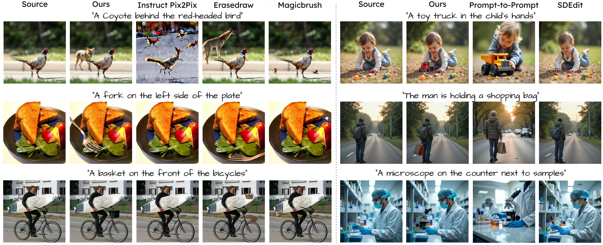

Qualitative comparison of Add-It with other baselines, on real images (left) and generated images (right).

Adding Object into images based on text instructions is a challenging task in semantic image editing, requiring a balance between preserving the original scene and seamlessly integrating the new object in a fitting location. Despite extensive efforts, existing models often struggle with this balance, particularly with finding a natural location for adding an object in complex scenes. We introduce Add-it, a training-free approach that extends diffusion models' attention mechanisms to incorporate information from three key sources: the scene image, the text prompt, and the generated image itself. Our weighted extended-attention mechanism maintains structural consistency and fine details while ensuring natural object placement. Without task-specific fine-tuning, Add-it achieves state-of-the-art results on both real and generated image insertion benchmarks, including our newly constructed "Additing Affordance Benchmark" for evaluating object placement plausibility, outperforming supervised methods. Human evaluations show that Add-it is preferred in over 80% of cases, and it also demonstrates improvements in various automated metrics.
Architecture outline: Given a tuple of source noise XTsource , target noise XTtarget , and a text prompt Ptarget , we first apply Structure Transfer to inject the source image's structure into the target image. We then extend the self-attention blocks so that XTtarget pulls keys and values from both Ptarget and XTsource, with each source weighted separately. Finally, we use Subject Guided Latent Blending to retain fine details from the source image.
Qualitative comparison of Add-It with other baselines, on real images (left) and generated images (right).
Quantitative comparison of Add-It with other baselines on human-preference (left) and automatic metrics (right)
Add-it can generate images Step-by-Step, allowing the final image to better adapt to user preferences at each step.
Images generated by Add-it with and without the latent blending step, along with the resulting affordance map. The latent blending block helps align fine details from the source image, such as removing the girl’s glasses or adjusting the shadows of the bicycles.
Add-it can operate on non-photorealistic source images.
If you find our work useful, please cite our paper:
@misc{tewel2024addit,
title={Add-it: Training-Free Object Insertion in Images With Pretrained Diffusion Models},
author={Yoad Tewel and Rinon Gal and Dvir Samuel and Yuval Atzmon and Lior Wolf and Gal Chechik},
year={2024},
eprint={},
archivePrefix={arXiv},
primaryClass={cs.CV},
url={},
}